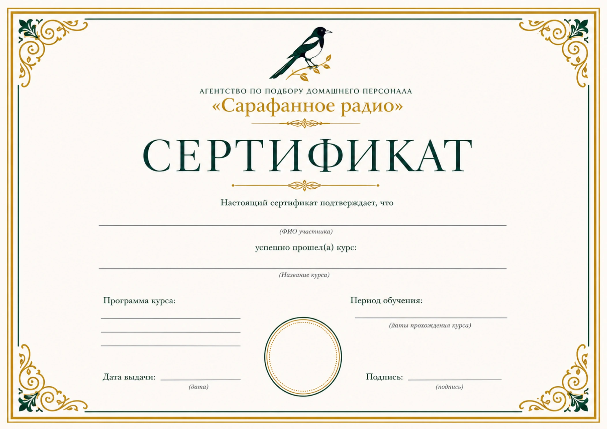

15+
лет помогаем семьям
Опыт в сфере подбора домашнего персонала.
Подбираем нянь, гувернанток, помощников по дому, управляющих и других специалистов для семей Москвы и Московской области. Сначала узнаём, как устроен ваш быт, какой график и круг задач нужен, затем ищем человека, которому будет комфортно работать в этом ритме.
15+
Опыт в сфере подбора домашнего персонала.
Подбор домашнего персонала для семей столицы и Подмосковья.
Личные встречи и очное обучение по адресу: Ильинское шоссе, д. 16.
Вакансии публикуем в Telegram, WhatsApp и MAX.
Домашний персонал решает разные задачи: заботится о ребёнке, поддерживает порядок, организует работу дома или помогает с личными делами. Расскажите, как устроена ваша повседневная жизнь, и мы поможем точнее сформулировать роль будущего сотрудника.
Повседневная забота о ребёнке, сопровождение режима, прогулок, игр и занятий в соответствии с правилами семьи.
Помощь с учебным распорядком, развивающими занятиями, домашними заданиями и организацией детского дня.
Поддерживающая или генеральная уборка, уход за поверхностями и текстилем, порядок по согласованному графику.
Семейные и детские маршруты, поездки по делам и выполнение согласованных поручений.
Регулярный и сезонный уход за участком, растениями, газоном и прилегающей территорией.
Комплексная помощь в доме и на участке с распределением хозяйственных задач между двумя сотрудниками.
Бытовая помощь, сопровождение в повседневных делах и внимание к привычному распорядку близкого человека.
Сортировка, хранение и организация гардероба, уход за деликатными тканями и сезонная подготовка вещей.
Координация домашнего персонала, расписаний, хозяйственных задач, закупок и взаимодействия с подрядчиками.
Работа с расписанием, поездками, бронированиями, покупками, документами и личными поручениями.
Опишите задачи, график, размер дома и особенности семьи. На первой консультации соберём требования и определим подходящую категорию специалиста.
Нам важно понять не только название позиции, но и реальную задачу семьи. Обсуждаем место и формат работы, график, обязанности, желаемый опыт и особенности общения. После этого запрос превращается в понятный профиль будущего сотрудника.
Последовательно переходим от задачи семьи к знакомству с подходящими кандидатами.
Обсуждаем состав семьи, место работы, график, круг обязанностей и пожелания к будущему сотруднику.
Сопоставляем запрос семьи с опытом, навыками и доступностью соискателей. Уточняем интерес кандидата к конкретной позиции.
Организуем знакомство, на котором можно обсудить практические ситуации, обязанности и ожидания обеих сторон.
После выбора кандидата согласовываются дата выхода, график и основные рабочие договорённости.
Хорошее знакомство должно ответить на два вопроса: справится ли кандидат с задачами семьи и подходит ли предложенный формат самому специалисту. Поэтому до встречи обсуждаем не только опыт, но и рабочие ожидания обеих сторон.
Уточняем, с какими задачами кандидат работал раньше, что умеет делать самостоятельно и в каком формате привык работать.
Сопоставляем режим, место работы, нагрузку, необходимость поездок и другие условия с возможностями соискателя.
На личном интервью обсуждаем мотивацию, стиль общения и границы ответственности, чтобы подготовить содержательное знакомство с семьёй.
Иногда у соискателя уже есть подходящие личные качества и опыт, но отдельные практические навыки требуют развития. В таком случае можно пройти очную подготовку в офисе агентства в Красногорске.
Узнать об обученииПрограммы подходят соискателям, которые хотят подготовиться к работе в семье или систематизировать уже имеющиеся знания. Занятия проходят очно в офисе агентства в Красногорске.
Узнать об обученииРабота в семье, взаимодействие с ребёнком и родителями, организация безопасного и понятного распорядка дня.
Последовательность уборки, работа с поверхностями и инвентарём, организация ухода за домашним пространством.
Сортировка, хранение и уход за деликатными тканями, сезонная организация личного гардероба.
Работаем с соискателями со всей России. В каналах агентства публикуются актуальные вакансии и объявления о наборе домашнего персонала.
При отклике расскажите о профессии, опыте, городе проживания и предпочтительном графике. Подробную анкету можно заполнить прямо на сайте, а если для позиции не хватает практических знаний, узнать об очном обучении в Красногорске.
Домашний сотрудник входит в личное пространство семьи, поэтому подбор нельзя свести к формальному сравнению анкет. Первый разговор помогает понять бытовой уклад, будущие обязанности, границы ответственности и ожидания от общения.
Мы открыто знакомим вас с людьми, которые развивают агентство «Сарафанное радио». Вы заранее знаете, к кому обращаетесь по вопросам подбора, вакансий и обучения.

В презентации собраны направления подбора, очное обучение, информация о команде и контакты. Скачайте файл, чтобы спокойно изучить его и обсудить запрос с близкими.
Скачать презентациюРекомендательная программа
10 000 ₽
Название «Сарафанное радио» отражает простую идею: хорошими контактами хочется делиться. Если по вашей рекомендации к нам обратится работодатель и агентство закроет его заявку, мы выплатим вам 10 000 ₽.
Хотите порекомендовать агентство? Напишите нам в удобном мессенджере, и мы расскажем, как зафиксировать рекомендацию.
Сообщить о рекомендацииКоротко отвечаем на вопросы о географии работы, начале подбора, вакансиях, обучении и рекомендательной программе.
Для заказчиков мы работаем по Москве и Московской области.
Если по вашей рекомендации обратится работодатель и агентство закроет его заявку, вы получите 10 000 ₽. Чтобы зафиксировать рекомендацию, напишите представителю агентства в удобном мессенджере.
Да, мы работаем с соискателями со всей России.
Актуальные вакансии публикуются в каналах агентства в WhatsApp, MAX и Telegram.
Обучение проходит очно в офисе агентства в Красногорске, Ильинское шоссе, д. 16.
Мы работаем с запросами на нянь, гувернанток, домработниц, водителей, садовников, семейные пары, сиделок, специалистов по VIP-гардеробу, управляющих домом и личных помощников.
Опишите задачи, график и ожидаемый результат. В ходе первого разговора поможем сформулировать круг обязанностей и профиль подходящего специалиста.
С разговора о семье и будущей работе. Уточняем место, график, обязанности, желаемый опыт и особенности взаимодействия, затем переходим к поиску кандидатов.
Можно узнать об очных программах подготовки нянь, профессиональной уборке дома и уходе за VIP-гардеробом в офисе агентства.
Оставьте имя, номер телефона и выберите категорию персонала. При разговоре уточним задачи, график, место работы и ваши пожелания к будущему сотруднику.
+7 (495) 123-45-67Агентство по подбору домашнего персонала «Сарафанное радио»
Подбор персонала для семей Москвы и Московской области. Работа с соискателями со всей России и очное обучение в Красногорске.
Адрес офисаКрасногорск, Ильинское шоссе, д. 16 Телефон+7 (495) 123-45-67